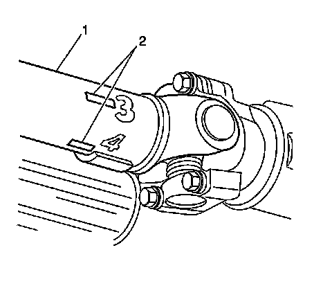
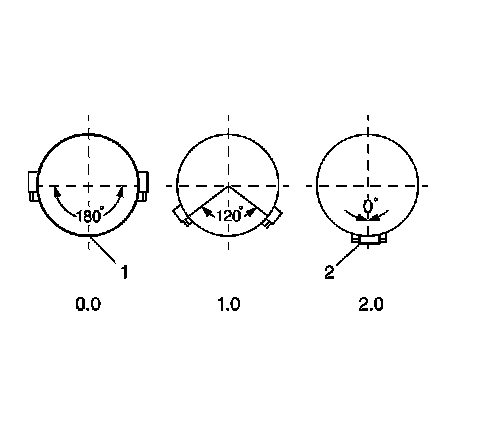

Driveline System Balance Adjustment (Using EVA)
Driveline System Balance Adjustment (Using EVA)
This procedure is designed to fine-tune the balance of a propeller shaft while it is mounted in the vehicle. Small amounts of residual imbalance which could be present in other related driveline system components could be compensated for as a result of performing this procedure. The end result of properly fine-tuning a propeller shaft balance may be either a significant reduction or an elimination of a vibration disturbance that is related to the first-order rotation of a propeller shaft.
Fine-tuning the balance of a propeller shaft can aid in achieving a more balanced total driveline system.
Important: The runout of the propeller shaft to be balanced and the runout of the components that the propeller shaft mates to must be within tolerances before an attempt should be made to perform this procedure.
If J 38792-A Electronic Vibration Analyzer (EVA) 2 is available, use the following procedure, Adjustment Procedure Using EVA. If the EVA 2 is not available, use the second procedure, Adjustment Procedure Without EVA.
Adjustment Procedure Using EVA
Tools Required
* J 38792-A Electronic Vibration Analyzer (EVA) 2
* J 38792-20 20-Foot Timing Light Power Cord Extension
* J 38792-25 Inductive Pickup Timing Light, or equivalent
* J 38792-27 6-Foot EVA Power Cord Extension
Notice: Do not depress the brake pedal with the brake rotors and/or the brake drums removed, or with the brake calipers repositioned away from the brake rotors, or damage to the brake system may result.
1. Raise and support the vehicle; ensure that the drive axle or axles are supported at ride height - vehicle body supported by suspension components.
2. With the tire and wheel assemblies, and the brake rotors and/or brake drums removed from the drive axle, or axles, start the engine and turn OFF all engine accessories.
3. Place the transmission in forward gear.
4. Run the vehicle at the speed which causes the most vibration in the propeller shaft; observe which end of the propeller shaft exhibits the greatest amount of vibration disturbance.
5. Turn the engine OFF to slow and stop the rotation of the propeller shaft.

6. Mark the circumference of the propeller shaft (1) to be balanced at four points 90 degrees apart (2), nearest the end that exhibited the greatest amount of vibration. Number the marks 1 through 4.
7. Install the J 38792-A , the J 38792-27 , the J 38792-25 , or equivalent, and the J 38792-20 to the vehicle.
8. Connect the clip of the J 38792-25 , or equivalent, onto the trigger wire of the J 38792-A .
9. Mount the J 38792-A vibration sensor to the bottom of the driveline component nearest to the end of the propeller shaft that exhibited the greatest amount of vibration.
Ensure that the side of the sensor marked UP faces upward and that the sensor is positioned as close to horizontal as possible.
10. Plug the vibration sensor cord into Input A of the J 38792-A . Input B is not used with the strobe function.
11. Run the vehicle at the speed which causes the most vibration in the propeller shaft; observe the frequency readings displayed on the J 38792-A .
Important: Do NOT continue with fine-tuning the balance of a propeller shaft if the dominant frequency displayed is not related to the first-order rotational speed of the propeller shaft.
12. Verify that the dominant frequency displayed on the J 38792-A matches the recorded frequency of the vibration concern.
13. Record the amplitude reading of the dominant frequency displayed.
14. Using the strobe function of the J 38792-A , select the correct filter range to use for the balance adjustment, so that the dominant frequency would be near the middle of the filter range. Use the full range filter only as a last resort if one of the specific range filters will not cover the frequency adequately.
15. The J 38792-A display will show the dominant frequency, the amplitude and the selected filter range.
16. Aim the J 38792-25 , or equivalent, at the marks placed on the propeller shaft. When activated, the strobe effect will appear to freeze the marks placed on the rotating propeller shaft. Record which of the numbered marks appears to be at the bottom of the propeller shaft, or the 6 o'clock position. This position identifies the light spot of the propeller shaft.
17. Turn the engine OFF to slow and stop the rotation of the propeller shaft.
18. Install a band-type hose clamp as a weight, with the head of the clamp directly on the light spot.
19. Run the vehicle at the speed which causes the most vibration in the propeller shaft.
20. Using the J 38792-25 , or equivalent, observe the positioning of the marks placed on the propeller shaft.
21. If the marks on the propeller shaft now appear to move erratically, compare the current amplitude of the vibration frequency to the original amplitude recorded previously.
If the amplitude has decreased from the amplitude recorded, the balance achieved may be sufficient and the vehicle should be road tested to determine the effect on the vibration concern.
22. If the clamp head over the original light spot, is now near the top of the propeller shaft, within 180 degrees - near or below the 12 o'clock position - of the original position at the bottom of the propeller shaft - 6 o'clock position - the position of the weight needs adjusting. Perform the following steps:
1. Move the position of the clamp head toward the 6 o'clock position.
2. Using the J 38792-25 , or equivalent, recheck the positioning of the propeller shaft marks.
3. If necessary, continue to move the position of the clamp head toward the 6 o'clock position and recheck progress until an improvement in balance is achieved.

23. If the clamp head over the original light spot, is still positioned at the bottom of the propeller shaft - 6 o'clock position - additional weight is required. Perform the following steps:
1. Add a second clamp to the propeller shaft, next to the first clamp and with the clamp heads aligned.
2. Using the J 38792-25 , or equivalent, recheck the positioning of the propeller shaft marks.
3. If the clamp heads over the original light spot, are now 90 to 180 degrees - at or above the 9 o'clock or the 3 o'clock positions - from the original position at the bottom of the propeller shaft - 6 o'clock position - less total weight is required. Proceed to step 23.4.
4. Move the position of the clamp heads an equal distance on either side of the light spot between 1 and 120 degrees apart from each other to reduce the total amount of weight in relation to the light spot.
5. Using the J 38792-25 , or equivalent, recheck the positioning of the propeller shaft marks.
6. If necessary, continue to move the position of the clamp heads an equal distance on either side of the light spot to a maximum of 120 degrees apart from each other, until the greatest improvement to balance is achieved.
7. If improvement has been made to the balance of the propeller shaft, but the balance is still not satisfactory, still more total weight may be required. Perform the following steps:
1. Add a third clamp to the propeller shaft, next to the first and second clamps and with the clamp head directly on the light spot.
2. Move the position of the first and second clamp heads an equal distance on either side of the light spot between 1 and 120 degrees apart from each other to arrive at a total amount of weight greater than two weights, but less than three weights in relation to the light spot.
3. Using the J 38792-25 , or equivalent, recheck the positioning of the propeller shaft marks.
4. If necessary, continue to move the position of the first and second clamp heads an equal distance on either side of the light spot to a maximum of 120 degrees apart from each other, until the greatest improvement to balance is achieved.
8. If a third clamp was used on the propeller shaft and sufficient balance could still not be achieved, the propeller shaft requires replacement.
24. If the clamp head over the original light spot is now 90 to 180 degrees - at or above the 9 o'clock or the 3 o'clock positions - from the original position at the bottom of the propeller shaft - 6 o'clock position - less total weight is required. Perform the following steps:
1. Add a second clamp to the propeller shaft, next to the first clamp and with the clamp heads aligned.
2. Move the position of the clamp heads an equal distance on either side of the light spot between 120 and 180 degrees apart from each other to reduce the total amount of weight in relation to the light spot.
3. Using the J 38792-25 , or equivalent, recheck the positioning of the propeller shaft marks.
4. If necessary, continue to move the position of the clamp heads an equal distance on either side of the light spot to a maximum of 180 degrees apart from each other, but not less than 120 degrees apart, until the greatest improvement to balance is achieved.
25. If the marks on the propeller shaft now appear to move erratically, compare the current amplitude of the vibration frequency to the original amplitude recorded previously.
If the amplitude has decreased from the amplitude recorded, the balance achieved may be sufficient and the vehicle should be road tested to determine the effect on the vibration concern.
Adjustment Procedure Without EVA
Notice: Do not depress the brake pedal with the brake rotors and/or the brake drums removed, or with the brake calipers repositioned away from the brake rotors, or damage to the brake system may result.
1. Raise and support the vehicle; ensure that the drive axle, or axles are supported at ride height - vehicle body supported by suspension components.
2. With the tire and wheel assemblies, and the brake rotors and/or brake drums removed from the drive axle or axles, start the engine and turn OFF all engine accessories.
3. Place the transmission in forward gear.
4. Run the vehicle at the speed which causes the most vibration in the propeller shaft; observe which end of the propeller shaft exhibits the greatest amount of vibration disturbance.
5. Carefully hold a piece of chalk up to the end of the propeller shaft in order to just make contact as the shaft rotates.
6. Turn the engine OFF to slow and stop the rotation of the propeller shaft.
7. Observe the location of the chalk mark on the propeller shaft.
* If the chalk mark circles the entire propeller shaft after the first attempt, remove the mark from the shaft and repeat steps 2 through 7; touch the chalk more gently to the propeller shaft.
* If the chalk mark circles the entire propeller shaft after the second attempt, runout of the propeller shaft may not be the cause of the disturbance. Proceed to step 16.
* If the chalk mark is only on a small portion of the propeller shaft, the mark identifies the heavy spot of the propeller shaft. The heavy spot of the propeller shaft will deflect downward during rotation. Place a small mark on the shaft 180 degrees, directly opposite the heavy spot, and identify the mark as the light spot. Proceed to step 8.
8. Install a band-type hose clamp to the propeller shaft as a weight, with the head of the clamp directly on the light spot, or 180 degrees, directly opposite the heavy spot.
9. Observe the amount of disturbance to the propeller shaft.
* If the amount of disturbance to the propeller shaft appears to be significantly reduced, the balance achieved may be sufficient and the vehicle should be road tested to determine the effect on the vibration concern. The head of the clamp can be moved very slightly, if necessary to refine the balance achieved.
* If the amount of disturbance to the propeller shaft appears to be almost unchanged or even increased, proceed to step 10.
10. Add a second clamp to the propeller shaft, next to the first clamp and with the clamp heads aligned.
11. Observe the amount of disturbance to the propeller shaft.
* If the amount of disturbance to the propeller shaft appears to be significantly reduced, the balance achieved may be sufficient and the vehicle should be road tested to determine the effect on the vibration concern. The head of the clamps can be moved very slightly an equal distance apart on either side of the light spot, or moved slightly while still aligned, if necessary to refine the balance achieved.
* If the amount of disturbance to the propeller shaft appears to be almost unchanged or even increased, proceed to step 12.
12. Move the position of the clamp heads an equal distance on either side of the light spot between 1 and 120 degrees apart from each other to reduce the total amount of weight in relation to the light spot.
13. Observe the amount of disturbance to the propeller shaft.
* If the amount of disturbance to the propeller shaft appears to be significantly reduced, the balance achieved may be sufficient and the vehicle should be road tested to determine the effect on the vibration concern. If necessary, continue to move the position of the clamp heads an equal distance on either side of the light spot to a maximum of 120 degrees apart from each other, until the greatest amount of reduction in the vibration disturbance is achieved.
* If the amount of disturbance to the propeller shaft appears to be almost unchanged or even increased, proceed to step 14.
14. Add a third clamp to the propeller shaft, next to the first and second clamps and with the head of the clamp directly on the light spot.
15. Observe the amount of disturbance to the propeller shaft.
* If the amount of disturbance to the propeller shaft appears to be significantly reduced, the balance achieved may be sufficient and the vehicle should be road tested to determine the effect on the vibration concern. If necessary, continue to move the position of the first and second clamp heads an equal distance on either side of the light spot to a maximum of 120 degrees apart from each other, until the greatest amount of reduction in the vibration disturbance is achieved.
* If the amount of disturbance to the propeller shaft appears to be almost unchanged or even increased after a third clamp was used on the propeller shaft, the propeller shaft likely requires replacement.
16. If the heavy spot of the propeller shaft could not be identified, install a band-type hose clamp to the propeller shaft as a weight, with the head of the clamp directly in-line with an existing factory-installed weight.
17. Observe the amount of disturbance to the propeller shaft.
* If the amount of disturbance to the propeller shaft appears to be significantly reduced, the balance achieved may be sufficient and the vehicle should be road tested to determine the effect on the vibration concern. The head of the clamp can be moved very slightly, if necessary to refine the balance achieved.
* If the amount of disturbance to the propeller shaft appears to be almost unchanged or even increased, proceed to step 18.
18. Move the head of the clamp 180 degrees, directly opposite the factory-installed weight.
19. Observe the amount of disturbance to the propeller shaft.
* If the amount of disturbance to the propeller shaft appears to be significantly reduced, the balance achieved may be sufficient and the vehicle should be road tested to determine the effect on the vibration concern. The head of the clamp can be moved very slightly, if necessary to refine the balance achieved.
* If the amount of disturbance to the propeller shaft appears to be almost unchanged or even increased, the propeller shaft may require replacement.